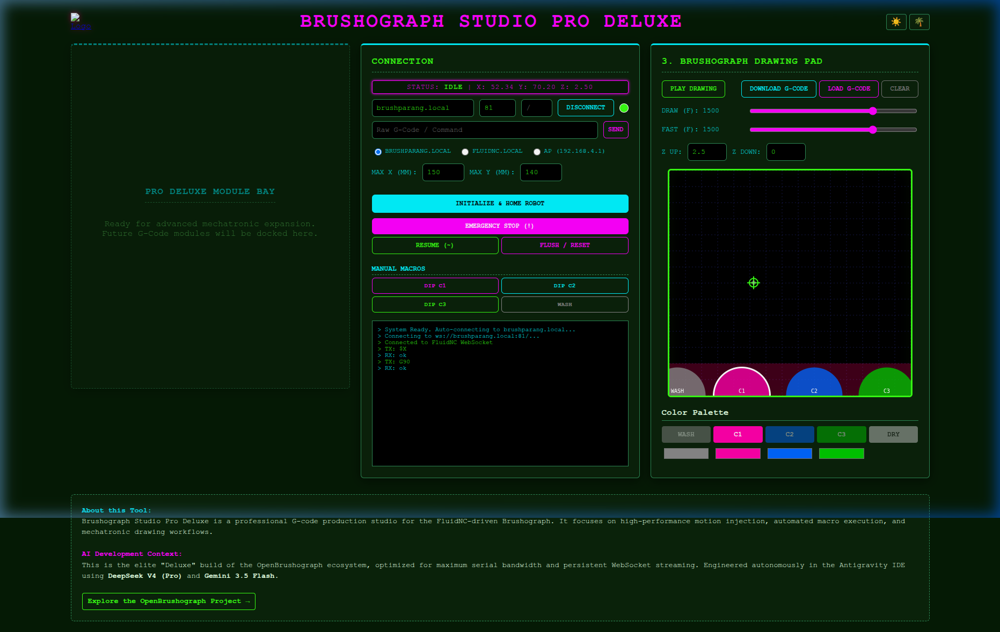
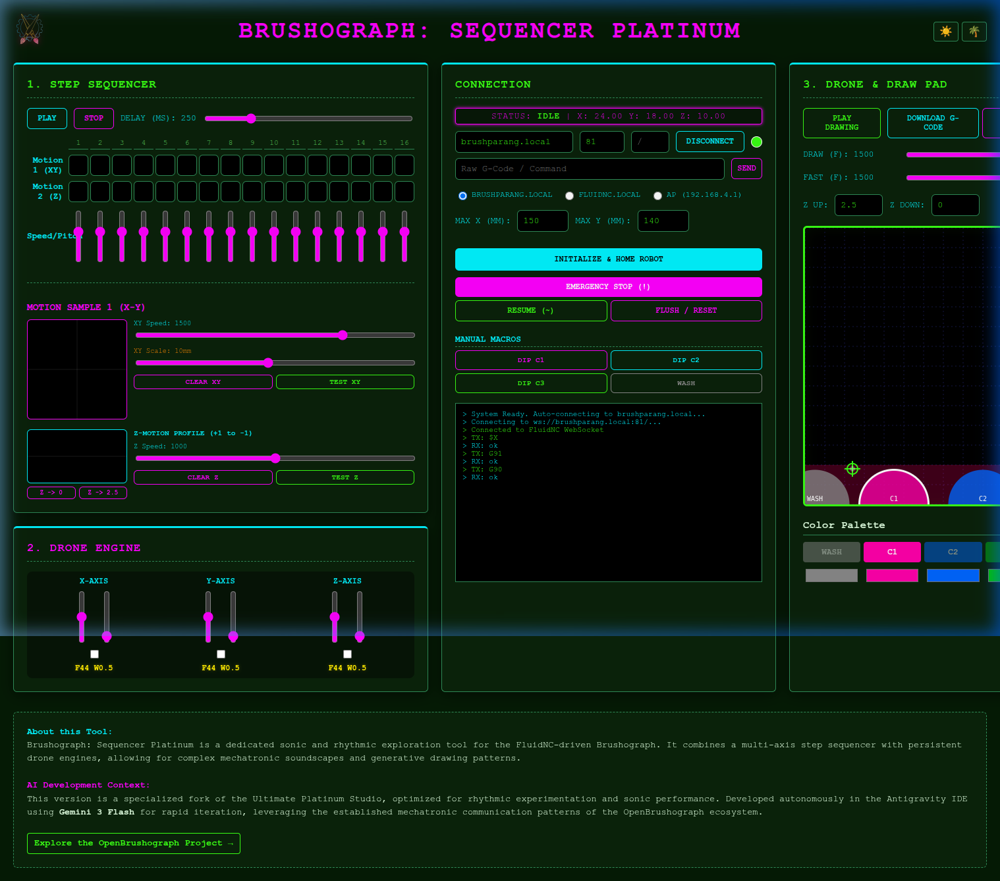
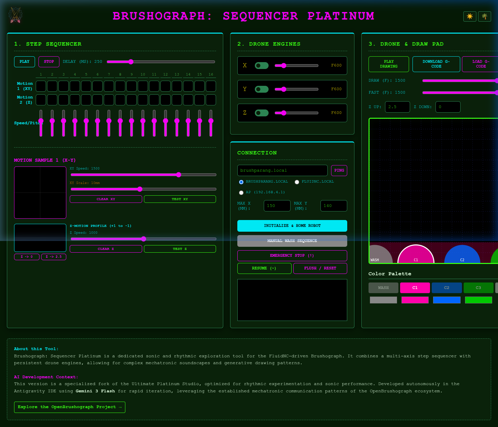
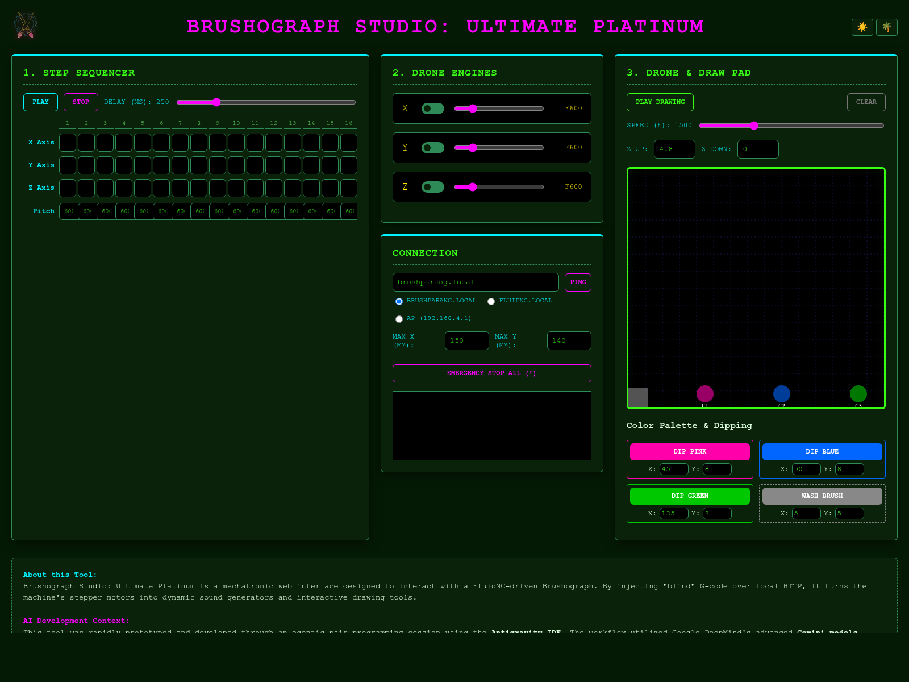
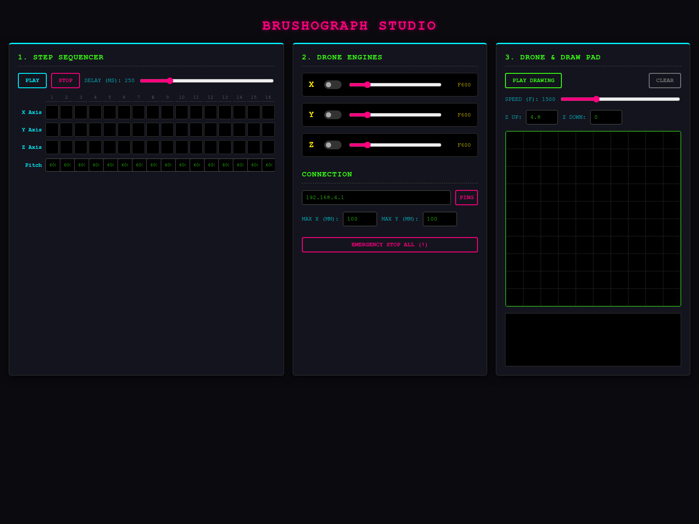
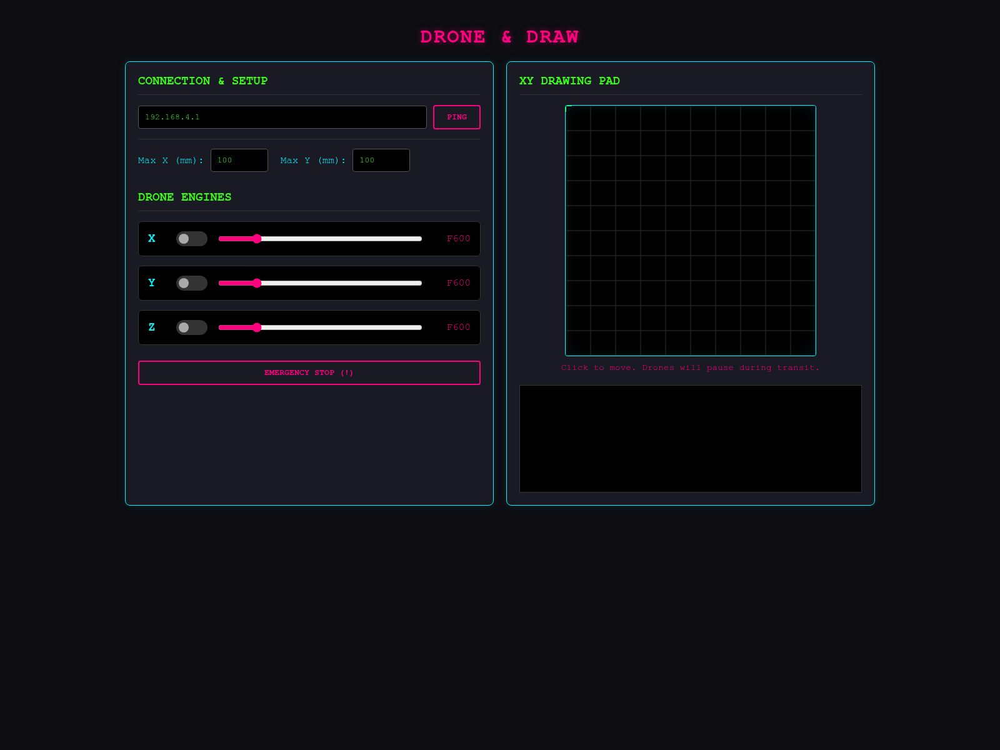
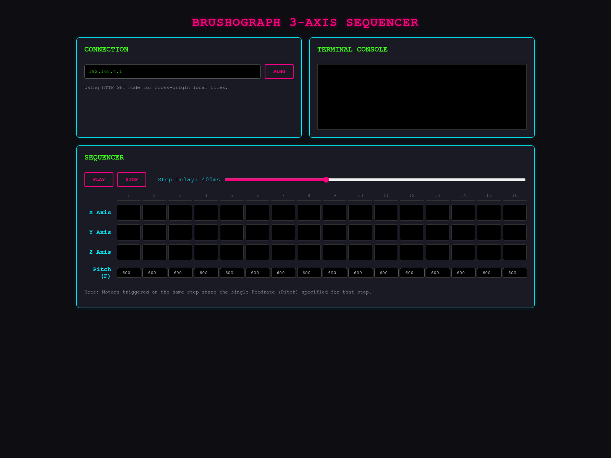
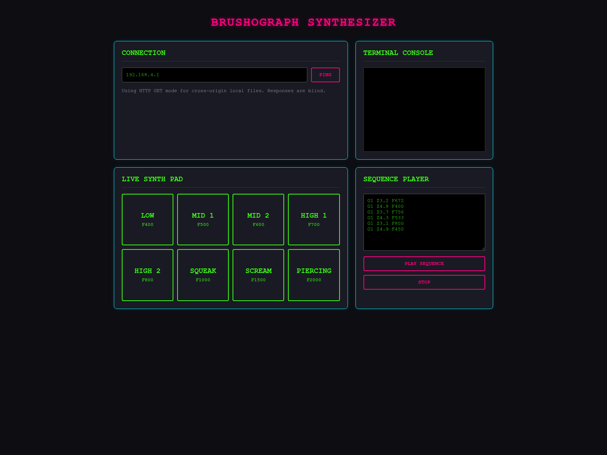

Technical Core: The elite "Studio" build optimized for stable, professional G-code production. Fully decommissioned the rhythmic relative sequencing of previous phases to lock the mechatronic engine into a high-precision Absolute (G90) state machine. Features a hardened WebSocket-first handshake, safe-lift path injection, and an empty "Module Bay" architecture ready for future mechatronic expansion.

Technical Core: Migrated to persistent WebSocket streaming for binary-encoded G-code injection. Implemented axis-combining batching in droneLoop for synchronized harmonic motion and a delta-accumulator smoothing layer for gesture-based XY/Z sequencing. Operates in stateful Relative (G91) mode by default to minimize serial buffer overhead, with explicit G90 resets for absolute macros.

A high-performance rhythmic instrument. Features dual-engine gesture sequencing (XY and Z-height), logarithmic speed mapping, and a profile editor for mechatronic sound design. Treats drawn motions as reusable rhythmic assets.

The definitive culmination of the project. This generative suite transforms the physical Brushograph into an automated multi-color robot, intelligently queuing safe-lifts, color dipping, and brush washing macros based on canvas interactions.

The master dashboard combining the Sequencer and Drone Engines into a unified 3-column layout. Features an upgraded Drawing Pad that records your mouse strokes and physically plays them back on the Brushograph with automated Z-axis pen lifting.

Introduces continuous recursive "Drone Tracks" with real-time pitch (Feedrate) sliders to generate continuous tones. Also features an interactive HTML Canvas representing the physical workspace for click-to-move spatial navigation.

A 16-step grid sequencer with separate tracks for the X, Y, and Z motors. Generates rhythmic motor vibrations by translating active steps into microscopic reciprocating G-code moves. Features play/stop controls and playback speed adjustments.

The very first experimental version of the interface. This prototype laid the groundwork for HTTP command injection and basic mechatronic control before the UI evolved into a multi-track sequencer.
A chronological summary of the AI-assisted development process, tracking the exact prompts and technical implementation details that built these interfaces.